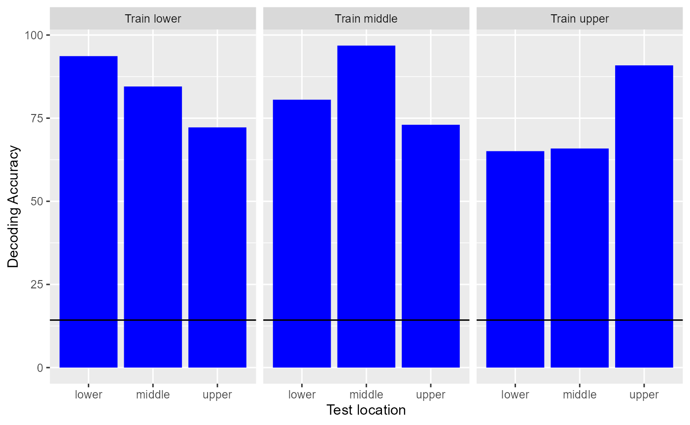

vignettes/generalization_tutorial.Rmd
generalization_tutorial.RmdThe following tutorial shows how to use the NeuroDecodeR (NDR) package to conduct a generalization analysis which can test whether a population of neural activity contains information in an invariant/abstract representation. In particular, we will use the Zhang-Desimone 7 object dataset to examine how invariant neural representations in the Inferior Temporal cortex are to changes in the position of stimuli. This tutorial assumes that one is already familiar with the basics of the NDR as covered in the introductory tutorial. The NDR is based on the MATLAB Neural Decoding Toolbox, which you can learn more about at www.readout.info.
An important step in solving many complex tasks involves creating abstract/invariant representations from widely varying input patterns. For example, in order to act appropriately in social settings, it is important to be able to recognize individual people. However, the images of a particular person that is projected on our retinas can be very different due to the fact that the person might be at different distances from us, in different lighting conditions, etc. Thus, at some level in our brains, there must be a neural representation that has abstracted away all the details present in particular images, in order to create abstract/invariant representations that are useful for behavior.
A powerful feature of the Neural Decoding Toolbox is that it can be used to test whether a particular population of neural activity has created representations that are invariant to particular transformations. To do such a generalization analysis, one can train a classifier under one set of conditions, and then see if the classifier can generalize to a new related set of conditions in which a particular transformation has been applied. The datasource object ds_generalization() is designed for this purpose, and we will explain how to use it below.
In this tutorial, we will use the Zhang-Desimone 7 object dataset to test how invariant neural representations in Inferior Temporal (IT) cortex are to changes in the retinal position of objects. The Zhang-Desimone 7 object dataset consists of neural responses to 7 different objects that were shown to a monkey at three different retinal locations. To test how invariant neural representations are in IT, we will train the classifier with data from one location, and then test the classifier either at the same location or at a different location. If the neural representation in IT are invariant to position, then training and testing a classifier at different locations should yield an equal level of performance as training and testing a classifier at the same location.
To start let us by loading some libraries we will use in this tutorial
For this tutorial, we will use binned-format data that consists of the firing rate in a 400 ms window that starts 100 ms after the onset of the stimulus. The following code shows how to create this binned data. For more information about binning the data, see the introduction tutorial.
Next, we will create a classifier object, a features preprocessor, and result metric objects that we will use in our analyses. We will use the same classifier, preprocessor and result metrics that were used in the basic tutorial.
In order to train with data from particular locations and test with data from a different location, we will use the ds_generalization datasource. To use this datasource, we need to specify which label levels belong to each training class and which label levels belong to each test class. We can do by setting the train_label_levels and test_label_levels arguments to lists with the appropriate values. Each entry in these lists corresponds to the label levels for one class. For example, if we create a list train_levels[[1]] <- c(‘car_upper’, ‘car_middle’), and test_levels[[1]] = list(‘car_lower’), this means that the first class will be trained with data from trials when the car was shown in the upper and middle positions, and the first class will have test data from trials in which cars where shown in the lower position.
To create training data for each object identity at upper and middle locations, and test data for each object at lower location, we can use the code below.
id_base_levels <- c("hand", "flower", "guitar", "face", "kiwi", "couch", "car")
train_levels <- NULL
test_levels <- NULL
for (i in seq_along(id_base_levels)){
train_levels[[i]] <- c(paste(id_base_levels[i], "upper",sep = '_'),
paste(id_base_levels[i], "middle",sep = '_'))
test_levels[[i]] <- paste(id_base_levels[i], "lower",sep = '_')
}
ds <- ds_generalization(binned_file_name, 'combined_ID_position', num_cv_splits = 18,
train_label_levels = train_levels, test_label_levels = test_levels)Now that we have created this ds_generalization data source, we can create a cross-validator as we did in the basic tutorial and get the results for training at upper and middle locations and testing at a lower location.
# create the cross-validator
cv <- cv_standard(ds, cl, fps, rms, 10)
# run the decoding analysis (and time how long it takes to run)
tictoc::tic()
DECODING_RESULTS <- run_decoding(cv)
tictoc::toc()## 17.035 sec elapsed# show the zero-one loss decoding accuracy (chance is 1/7)
DECODING_RESULTS$rm_main_results$zero_one_loss## [1] 0.8388889We will now create a full set of 9 results that are based on training at one of the three locations and testing a different locations. This can be done by creating two loops, one for each training location, and one for each test location, and by creating a new datasource each iteration.
It should be noted that the ds_generalization is built in such a way that if a particular original label is mapped to the same training and test class (e.g., if training_levels[[1]] <- list('car_upper') and test_levels[[1]] <- list('car_upper'), the data used in the training set will still come from different trials than the data used for the test set. Thus, the cross-validation splits will still be valid because there will not be any of the same data in the training and test sets (if this mapping was done for all classes, one would end up getting the same results as using the ds_basic). Because there is no ‘data leakage’, the following code allows for fair comparisons between results where the classifier was trained and tested with data from the same location vs. where the classifier was trained and tested with data from different locations.
Note that the code below will take several minutes to run.
results_dir_name <- "position_invariance_results/"
# If this code has been run before, delete any results that have been saved
if (file.exists(results_dir_name)){
the_files <- paste0(results_dir_name, list.files(results_dir_name))
file.remove(the_files)
file.remove(results_dir_name)
} ## [1] TRUEdir.create(results_dir_name)
id_base_levels <- c("hand", "flower", "guitar", "face", "kiwi", "couch", "car")
pos_base_levels <- c("upper", "middle", "lower")
# loop over all training and test position permutations
for (iTrainPos in 1:3) {
for (iTestPos in 1:3) {
# create the training and test label levels
train_levels <- list()
test_levels <- list()
for (iID in 1:7) {
train_levels[[iID]] <- c(paste(id_base_levels[iID], pos_base_levels[iTrainPos], sep = '_'))
test_levels[[iID]] <- c(paste(id_base_levels[iID], pos_base_levels[iTestPos], sep = '_'))
}
# create the ds_generalization data source
ds <- ds_generalization(binned_file_name, 'combined_ID_position', num_cv_splits = 18,
train_label_levels = train_levels, test_label_levels = test_levels)
# create the cross-validator
cv <- cv_standard(ds, cl, fps, rms, 10)
# run the decoding analysis (and time how long it takes to run
tictoc::tic()
DECODING_RESULTS <- run_decoding(cv)
tictoc::toc()
# create a name for the saved results
result_name <- paste("train ", pos_base_levels[iTrainPos], "test", pos_base_levels[iTestPos])
# save the results
log_save_results(DECODING_RESULTS, results_dir_name, result_name)
}
}## 16.118 sec elapsed## Warning in log_save_results(DECODING_RESULTS, results_dir_name, result_name): The manifest file does not exist.
## Assuming this is the first result that is saved and creating manifest file## 16.556 sec elapsed
## 16.356 sec elapsed
## 15.139 sec elapsed
## 16.189 sec elapsed
## 16.523 sec elapsed
## 16.172 sec elapsed
## 16.438 sec elapsed
## 16.281 sec elapsedTo plot all these results, we will create some custom code. This code loads the results for each training and test location pair using the log_load_results_from_result_name function and save the results to a data frame. This data frame is then plotted using ggplot2.
# compile all the results that were saved
all_results <- data.frame()
for (iTrainPos in 1:3) {
for (iTestPos in 1:3) {
# get the name of the result and load them
result_name <- paste("train ", pos_base_levels[iTrainPos], "test", pos_base_levels[iTestPos])
DECODING_RESULTS <- log_load_results_from_result_name(result_name, results_dir_name)
curr_results <- data.frame(decoding_accuracy = 100 * DECODING_RESULTS$rm_main_results$zero_one_loss,
train_location = paste("Train", pos_base_levels[iTrainPos]),
test_location = pos_base_levels[iTestPos])
all_results <- rbind(all_results, curr_results)
}
}
# plot the results
all_results %>%
ggplot(aes(test_location, decoding_accuracy)) +
geom_col(fill = "blue") +
geom_hline(yintercept = 1/7 * 100) +
facet_wrap(~train_location) +
ylab("Decoding Accuracy") +
xlab("Test location") 
Looking at the results, we can see that the highest decoding accuracies are always obtained when training and testing the classifier at the same location. However, the results are well above chance when training the classifier at one location and testing the classifier at a different location, showing there is a large degree of position invariance in the Inferior Temporal Cortex.